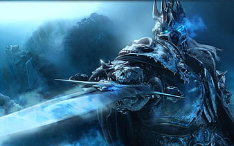

¿Qué es Rhythm Chasers?
Rhythm Chasers es un videojuego que combina los combates estratégicos de un juego RPG con las acciones ágiles y rítmicas propias de los juegos rítmicos.
Recorre las vastas tierras de Lyria, comparte tus experiencias con hasta un grupo de cuatro integrantes en multijugador o desvela por tu cuenta los múltiples enigmas que se esconden en este arcaico mundo.
¡Pero cuidado! No todo en Lyria es coser y cantar. Deberás idear una estrategia eficiente además de encontrar el equipamiento más apropiado para tus personajes. ¿Seréis capaces de liberar este mundo de la constante amenaza del malvado tirano que gobierna las tierras del norte? Solo hay una forma de averiguarlo.
